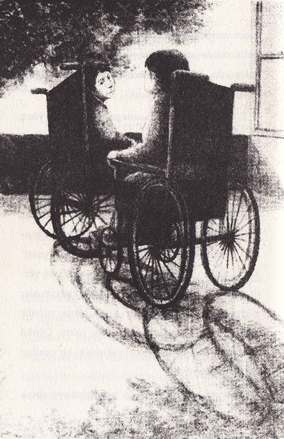
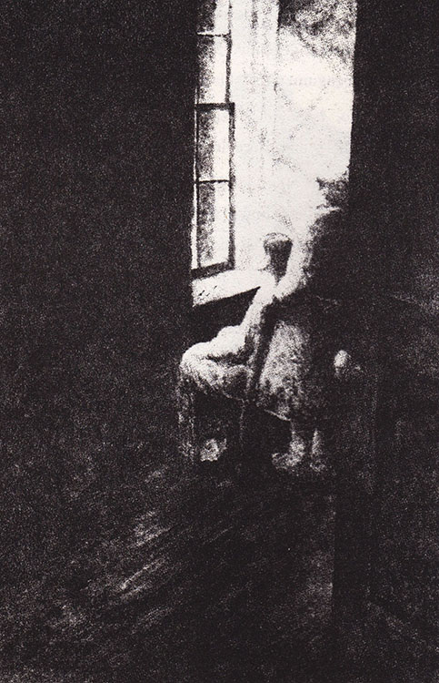

Herkes Sadako’nun şans getiren turnaları için kâğıt biriktiriyordu. Şizuko, bambu sınıfından renkli kâğıtlar getirdi. Babası da berber dükkânında eline geçen her kâğıdı topluyordu. Hatta Hemşire Yasunaga bile ilaçların kullanma talimatlarını veriyordu Sadako’ya. Masahiro da sözünü tutup, yapılan kuşları tavana asmaya devam ediyordu. Bazen birkaçını aynı ipe dizdiği oluyordu. Büyük olanları ise tek olarak asıyordu tavana.
Son birkaç ay içinde Sadako’nun kendisini çok iyi hissettiği de olmuştu. Buna karşın Dr. Numada, onun hastanede kalmasının çok daha iyi olacağını söyledi. Bu arada Sadako artık lösemi hastası olduğunu kabul etmişti, fakat bu hastalığa yakalananlardan bazılarının iyileştiğini biliyordu.
O nedenle iyileşeceğine dair umudunu hiçbir zaman yitirmedi.
İyi hissettiği zamanlarda ev ödevini yapıyor; arkadaşlarına mektuplar yazıyor, ziyaretçilerine oyunlarla, şarkılarla, bilmecelerle hoş vakit geçirtip onları eğlendiriyordu. Geceleri ise kuşlarını yapıyordu. Artık kuşların sayısı üç yüzü geçmişti ve Sadako, kâğıt katlama sanatında iyice ustalaşmıştı. Artık hiç hata yapmıyordu.
Ne var ki, lösemi, Sadako'nun enerjisini gitgide tüketiyordu; acının, ağrının ne demek olduğunu artık öğrenmişti. Bazen başının zonklaması okuyup yazmasına engel oluyordu. Bazı zamanlar da kemikleri sanki ateş üzerindeymiş gibi yanıyordu. Dahası baş dönmeleri Sadako’yu derin bir karamsarlığa sürüklüyordu. Çoğu zaman bir şey yapamayacak kadar yorgun oluyor ve bu gibi durumlarda pencerenin önüne oturup bahçedeki akçaağaca özlemle bakıyordu. Orada altın renkli turnasını kucağına koyup saatlerce oturabilirdi.
Bir gün Hemşire Yasunaga, onu güneş yüzü görsün diye tekerlekli iskemleyle verandaya çıkardı. Sadako, kendisini her zamankinden yorgun hissediyordu. Kenji’yi ilk kez o gün verandada gördü. Kenji dokuz yaşındaydı ama yaşına göre daha ufak görünüyordu. Sadako onun ince yüzüne, parlak, koyu renkli gözlerine baktı ve hemen kendini tanıttı. “Merhaba!” dedi, “ben Sadako’yum!” Kenji, alçak ve yumuşak bir sesle ona karşılık verdi. Çok geçmeden ikisi de çok eski arkadaşmışlar gibi konuşmaya başladılar. Kenji, uzun süredir hastanedeydi ama fazla ziyaretçisi yoktu. Çünkü ailesi ölmüştü; tek akrabası, yakındaki bir şehirde yaşayan teyzesiydi.
“Teyzem o kadar yaşlı ki, beni görmeye ancak haftada bir kez gelebiliyor,” dedi Kenji. “Ben de zamanımın çoğunu okumakla geçiriyorum.”

Sadako, Kenji’nin yüzündeki hüzünlü ifadeyi görmemek için başını çevirdi.
“O kadar da önemli değil,” dedi Kenji, yorgun ve bezgin bir sesle. “Çünkü yakında öleceğim. Atom bombası yüzünden lösemiye yakalandım.”
Sadako hemen, “Fakat sen nasıl lösemi olursun, o zaman daha doğmamıştın ki,” diye atıldı.
“Doğmuş olup olmamam önemli değil. Zehir annemin vücudundaymış, ben de bu zehiri ondan almışım,” diye yanıtladı Kenji.
Sadako onu teselli etmek istedi ama ne söyleyeceğini bilemiyordu. Sonra turnaları hatırladı. “Sen de benim gibi kâğıttan turna kuşları yapabilirsin,” dedi. “Kuşlar bir mucize yaratabilir.”
“Turnalarla ilgili hikâyeyi biliyorum,” dedi Kenji. Sakin bir şekilde konuşuyordu. “Fakat artık çok geç.”

Üç yüz doksan sekiz...
Üç yüz doksan dokuz...
Kenji, bir gün verandada görünmedi. Sadako gece geç vakit bir yatağın gürültüyle koridordan götürüldüğünü duydu. Hemşire Yasunaga, Sadako’nun odasına gelerek Kenji’nin öldüğünü haber verdi. Sadako çok kötü oldu ve duvara doğru dönüp hıçkırarak ağlamaya başladı.
Bir süre sonra hemşirenin şefkatli elini omzunda hissetti. “Haydi, gel pencerenin önünde oturup sohbet edelim seninle,” dedi hemşire, sevecen bir sesle.
Sadako ağlamayı bırakınca ay ışığının aydınlattığı gökyüzüne baktı. “Kenji’nin bir yıldız adasında olduğuna inanıyor musunuz?” diye sordu hemşireye.
“Her neredeyse, şimdi mutlu olduğundan eminim,” dedi Hemşire Yasunaga. “Çünkü ruhu artık yorgun ve hasta vücudundan kurtulup özgürleşti.”
Sadako sakinleşmişti ve akçaağacın yapraklarının rüzgârla hışırdamasını dinliyordu. Sonra, “Ölme sırası bana geldi, değil mi?” diye sordu.
Hemşire Yasunaga başını sallayarak, “Tabii ki hayır,” diye cevap verdi. Sonra Sadako’nun yatağına birkaç renkli kâğıt yayıp, “Gel bakalım,” dedi. “Uyumadan önce kâğıttan nasıl turna kuşu yaptığını görmek istiyorum. Bin tane yapınca çok, ama çok uzun yaşayacaksın.”
Sadako buna inanmak için kendisini çok zorladı. Kuşları özenle katlamaya devam etti ve aynı istekte bulundu.
Dört yüz altmış üç,
Dört yüz altmış dört...